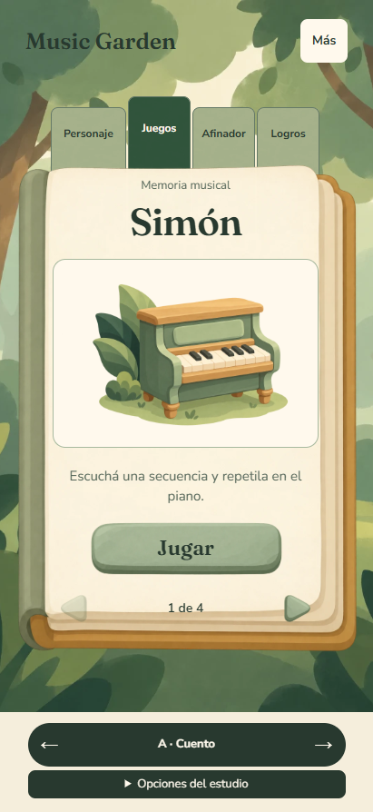
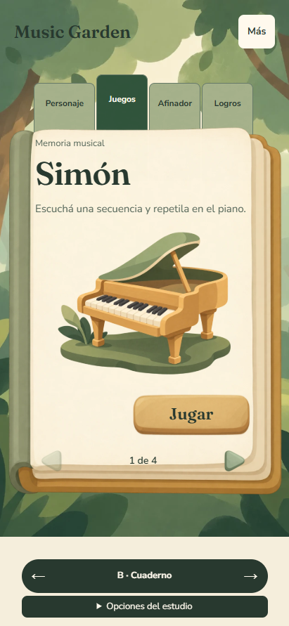
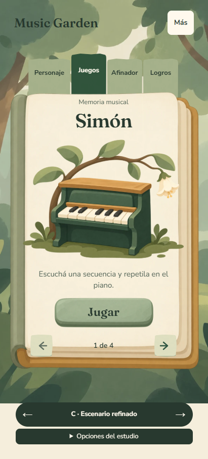

A · Cuento
Portada centrada, imagen enmarcada.

B · Cuaderno
Texto primero y acción lateral.

C · Escenario
La escena abre; título y acción al pie.

Una sola pantalla de referencia: Simón. Mismo contenido, tres jerarquías visuales. Seleccioná un nombre para recorrer el prototipo.
Portada centrada, imagen enmarcada.

Texto primero y acción lateral.

La escena abre; título y acción al pie.
